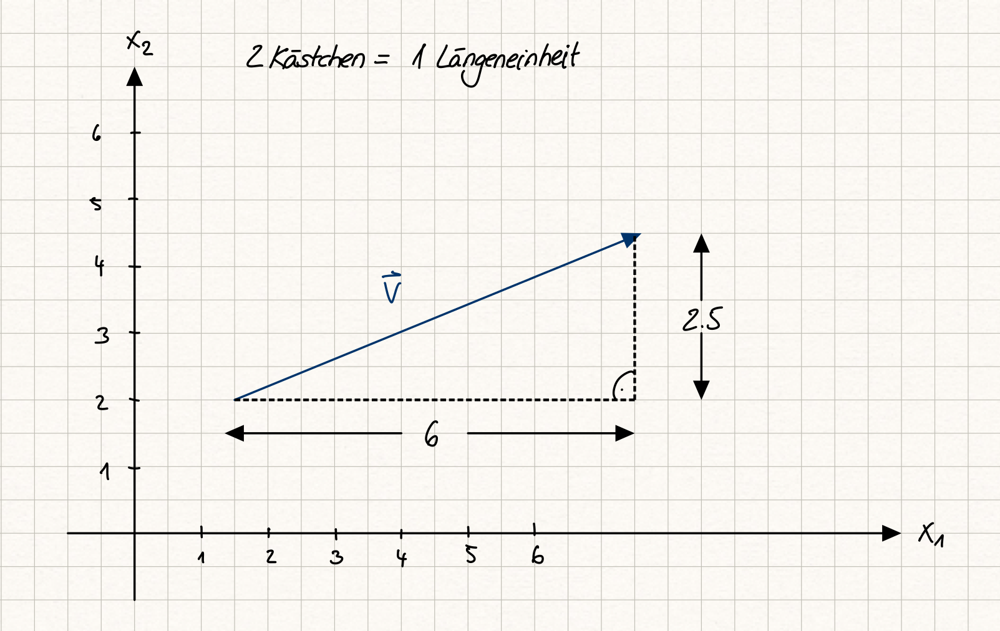

3.5 Betrag Vektor und Abstand Punkte#
Nachdem wir im letzten Kapitel den affinen Punkt kennengelernt haben, führen wir nun noch den Betrag von Vektoren ein. Streng genommen, wird so aus dem Vektorraum ein normierter Raum.
Lernziele#
Lernziele
Sie wissen, was der Betrag eines Vektors ist und können ihn ausrechnen.
Sie können den Einheitsvektor in Richtung eines Vektors bestimmen (=normieren).
Sie können den Abstand zweier Punkte berechnen.
Sie können den Mittelpunkt zweier Punkte berechnen.
Betrag eines Vektors#
Der Betrag eines Vektors ist geometrisch interpretiert die Länge des Pfeils, also der Verschiebung. Wird das kartesische Koordinatensystem genutzt, können wir eine Formel zu Berechnung des Betrages angeben. Ist \(\vec{v}\in \mathbb{R}^n\) ein Vektor, so wird sein Betrag mit dem Symbol
abgekürzt. Um nun den Betrag eines Vektors des reellen Standardvektors berechnen zu können, fertigen wir zunächst eine Skizze an. Als Beispiel nehmen wir einen Vektor \(v\in\mathbb{R}^2\) mit
Es gibt unendlich viele Pfeile, die geometrisch diesen Vektor im kartesischen Koordinatensystem repräsentieren. In der Skizze haben wir die Verschiebung eingezeichnet, die beim Punkt \((1.5, 2)\) startet.


Fig. 9 Beispiel eines Vektors im \(\mathbb{R}^2\); Quelle: eigene Darstellung; Lizenz: CC BY-SA 4.0#
Ergänzen wir jetzt zwei Strecken wie in der Skizze ersichtlich, so ergibt sich ein rechtwinkliges Dreieck. Die Länge der Katheten entspricht den Elementen des Vektors. Daher können wir mit dem Satz des Pythagoras direkt die Länge bzw. den Betrag \(|\vec{v}|\) des Vektors berechnen:
Dieses Vorgehen können wir verallgemeinern. Allgemein kann der Betrag \(|\vec{v}|\) eines Vektors
des reellen Standardvektorraumes \(\mathbb{R}^n\) folgendermaßen berechnet werden:
Video “Betrag / euklidische Norm” von Mathematische Methoden
Einheitsvektor bzw. Vektoren normieren#
Ein Vektor, der die Länge bzw. den Betrag Eins hat, für den also \(|\vec{v}|=1\) gilt, wird Einheitsvektor genannt. Beispielsweise ist der Vektor
ein Einheitsvektor, denn es gilt
Sehr häufig ist ein Vektor kein Einheitsvektor. In den Ingenieurwissenschaften wird jedoch oft gefordert, Richtungen durch Einheitsvektoren zu beschreiben. Es gibt die Möglichkeit, aus jedem Vektor (wenn es nicht gerade der Nullvektor ist), einen Einheitsvektor zu machen. Diesen Vorgang nennt man Normierung. Ein Vektor wird normiert, indem jede Komponente durch den Betrag des Vektors geteilt wird. In unserem obigen Beispiel galt
Teilen wir die beiden Komponenten jeweils durch \(6.5=\frac{13}{2}\), erhalten wir den normierten Vektor
Einheitsvektoren, die durch Normierung aus einem Vektor \(\vec{v}\) entstanden sind, werden üblicherweise als \(\vec{e}_{v}\) notiert. Wir rechnen noch nach, ob der Vektor \(\vec{e}_v\) tatsächlich ein Einheitsvektor ist:
Allgemein lautet die Formel zur Normierung eines Vektors \(\vec{v}\)
Video “Vektor normieren (Normalenvektor Einheitsvektor)” von Mathematrick
Abstand zweier Punkte#
Bisher haben wir nur Vektoren betrachtet bzw. ihre geometrische Interpretation als Verschiebung. Als nächstes greifen wir wieder auf das Konzept des affinen Punktraumes \(\mathbb{R}^n\) zurück und nutzen es, um den Abstand zweier Punkte im \(\mathbb{R}^n\) zu berechnen.
Die beiden Punkte nennen wir \(P\) und \(Q\) und ihre Koordinaten werden entsprechend als \(P(P_1, P_2, \ldots, P_n)\) und \(Q(Q_1, Q_2, \ldots, Q_n)\) bezeichnet. Weil der reelle Standardvektorraum \(\mathbb{R}^n\) ein affiner Punktraum ist, muss ein Vektor \(\vec{v}\) existieren, der \(P\) und \(Q\) verbindet, also
Im vorherigen Kapitel haben wir schon gelernt, dass dieser Vektor aus den komponentenweisen Differenzen der Punktkoordinaten besteht:
Von diesem Vektor brauchen wir also nur noch den Betrag berechnen, um den Abstand \(d(P,Q)\) zwischen dem Punkt \(P\) und dem Punkt \(Q\) zu erhalten:
Das »d« steht dabei für das Wort Distanz.
Video zu “Abstand zweier Punkte” von Mathematische Methoden
Mittelpunkt einer Strecke berechnen#
Sind zwei Punkte \(P\) und \(Q\) gegeben, können wir die Richtung zwischen den beiden Punkten als
angeben. Ist nun die Position den Punktes \(M\) als Mittelpunkt zwischen \(P\) und \(Q\) gefragt, so müssen wir den Punkt \(P\) um die Hälfte von \(\overrightarrow{PQ}\) verschieben. Es gilt also
Video “Vektorrechnung Mittelpunkt berechnen” von Mathematrick
Zusammenfassung und Ausblick#
In diesem Kapitel haben wir den Betrag/Länge eines Vektors kennengelernt. Zum einen wird der Betrag benötigt, um bei technischen Problemen die Größe eines Vektors zu bestimmen (z.B. Größe/Stärke der Kraft), zum anderen werden Vektoren häufig normiert, um nur die Richtung anzugeben. Mit Hilfe des Betrages können wir darüber hinaus den Abstand oder den Mittelpunkt zweier Punkte berechnen.